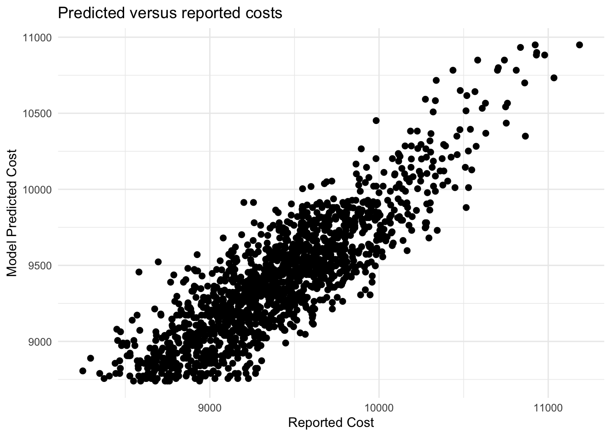
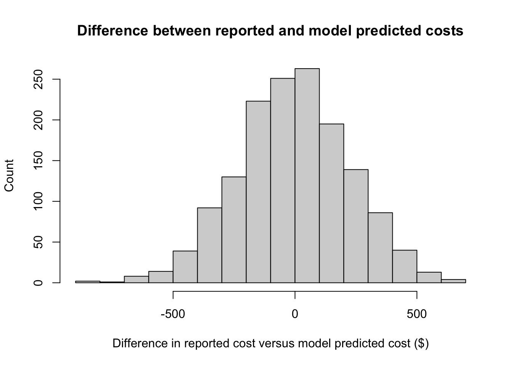

| Characteristic | N = 5,0001 |
|---|---|
| smoke | 646 (13%) |
| female | 2,866 (57%) |
| age | 45 (31, 59) |
| cardiac | 275 (5.5%) |
| cost | 9,376 (9,090, 9,676) |
| 1 n (%); Median (Q1, Q3) | |
HRP 203: Assignment4
Introduction
Numerous personal factors impact the total amount of health expenditures an individual has in a given health care encounter. In particular, demographic information such as age, sex, and comorbidity history can make health care encounters more or less complicated. For example, chest pain in a 72-year-old with a history of smoking and cardiovascular disease may require more work than chest pain in a 24-year-old without a history of smoking and cardiovascular disease.
In this analysis, we compare prices among those with versus those without smoking history and cardiovascular history, separately, to determine if the presence of one of these comorbidities dramatically affects overall costs. Then, we determine the validity of using variables commonly available in the electronic health record, such as age, sex, smoking history, and history of cardiovascular disease to predict costs of an individual health care encounter.
Methods
First, we test if there is a significant difference in costs among those with and without smoking history as well as a history of cardiovascular disease. Then, we use a prediction model to estimate costs given age, sex, and comorbidity history.
Data
The data is a simulated cohort of 5,000 individuals.
Data Analysis
We compared costs of health encounters among those with and without smoking history and history of cardiovascular disease. A two-sided t-test was used to determine if the mean cost of the two groups were the same. We considered an alpha of less than 0.05 to be significant.
For the main prediction model, we used a generalized linear model of the form:
\(Cost = \alpha * smokehx + \beta * Female + \gamma * age + \delta * cardiachx\)
We trained the model on a random 70% subset of the data, and then tested the model on the remaining 30% of the data.
Results
Descriptive statistics
Of the 5,000 simulated individuals, 2,866 (57%) were female. The median age was 45 with an interquartile range of 31 to 59. 646 (13%) individuals had a smoking history, while 275 (5.5%) had a history of cardiovascular disease. Median cost was $9,376 (USD) with an interquartile range of $9,090 to $9,676 (Table 1).
Table 1: Summary statistics of the simulated data.
Costs among those with and without smoking history
The mean cost of a healthcare encounter among those with a smoking history was $9,903, while the mean cost of a healthcare encounter among those who do not smoke was $9,323. A two sided t-test resulted in a p-value of <0.001, suggesting there is a difference in costs among those with and without a smoking history.
Welch Two Sample t-test
data: df_smk$cost and df_nosmk$cost
t = 30.054, df = 786.62, p-value < 2.2e-16
alternative hypothesis: true difference in means is not equal to 0
95 percent confidence interval:
542.0365 617.7909
sample estimates:
mean of x mean of y
9903.053 9323.139 Costs among those with and without history of cardiovascular disease
The mean cost of a healthcare encounter among those with a history of cardiovascular disease was $10,218, while the mean cost of a healthcare encounter among those who do not have a history of cardiovascular disease was $9,350. A two sided t-test resulted in a p-value of <0.001, suggesting there is a difference in costs among those with and without a history of cardiovascular disease.
Welch Two Sample t-test
data: df_cardiac$cost and df_nocardiac$cost
t = 32.898, df = 302.7, p-value < 2.2e-16
alternative hypothesis: true difference in means is not equal to 0
95 percent confidence interval:
815.9847 919.8149
sample estimates:
mean of x mean of y
10218.229 9350.329 Cost prediction model
We used a generalized linear model to predict cost from four variables readily available in electronic health record data: age, sex, smoking history, history of cardiovascular disease. We found that all four of the variables included had a significant coefficient, so we included all four in the model (Table 2).
A history of smoking increases costs, on average, by $498 dollars compared to no history of smoking. Being female decreases costs, on average, by $274. Each additional year of age increases costs by approximately $17. Finally, a history of cardiovascular disease increases costs, on average, by $538 compared to those without a history of cardiovascular disease.
| Characteristic | Beta | 95% CI | p-value |
|---|---|---|---|
| smoke | 498 | 474, 521 | <0.001 |
| female | -274 | -290, -258 | <0.001 |
| age | 17 | 16, 17 | <0.001 |
| cardiac | 538 | 503, 574 | <0.001 |
| Abbreviation: CI = Confidence Interval | |||
Table 2: Summary table of variable coefficients in generalized linear model.
Finally, we use two plotting methods to confirm accuracy of our prediction model. When we plot the true cost versus the predicted cost, a linear trend is observed (Figure 1). Additionally, when we plot the difference between the true cost and the predicted cost, the differences are normally distributed and centered around zero (Figure 2).

Figure 1: Scatter plot of predicted costs compared to reported costs.

Figure 2: Histogram of the difference between predicted cost and reported cost.
Discussion
In conclusion, we see that all four factors, age, sex, smoking history, and history of cardiovascular disease, significantly impact the overall reported cost of a healthcare encounter. Additionally, we see that when used to predict health care costs, predicted costs have a linear relationship with reported costs. Additionally, we see that the differences between predicted and reported costs are normally distributed around zero.
There are some limitations to this analysis: there are some observations for which the model prediction and expected cost are larger than $500 different, although that is only about 5% of the median cost. Additionally, the simulated dataset represents a particular subsection of all patients, and generalizability outside of this patient population may be difficult.
Taken together, this analysis suggests that evidence regularly collected from the electronic health record including age, sex, and certain comorbidities can accurately predict expected healthcare costs of a healthcare encounter for patients similar to those in our simulated data set.
AI Statement:
No generative AI was used for any portion of this assignment.